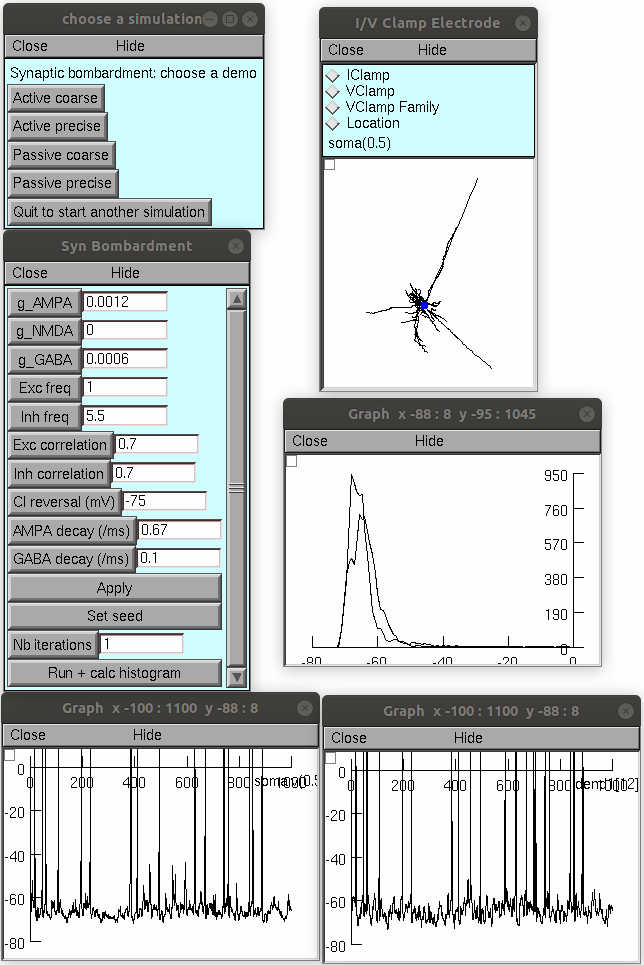

This demo simulates synaptic bombardment of "in vivo like" conditions
in neocortical pyramidal neurons, based on the model detailed in
Destexhe, A. and Pare D. Impact of network activity on the integrative
properties of neocortical pyramidal neurons in vivo. J. Neurophysiol.
81: 1531-1547, 1999.
doi: 10.1152/jn.1999.81.4.1531
These model files were contributed by A Destexhe. A PDF copy of this paper is available in http://cns.iaf.cnrs-gif.fr
(see this paper for all details)
Usage:
------
Compile the mod files with nrnivmodl (linux); for additional platforms
(for microsoft windows replace corrgen8.mod with corrgen8.mod.windows before compiling mod files) and detailed help please consult the following if needed:
https://senselab.med.yale.edu/ModelDB/NEURON_DwnldGuide
Start with a command like:
nrngui mosinit.hoc
Select a simulation to run from the buttons in the GUI
For example selecting "Active precise", and then
"Run + calc histogram" should create the following figures

Changelog